À propos
Passionné par les nouvelles technologies et l'automatisme
Étudiant en dernière année de BUT GEII, parcours Automatisme et Informatique Industrielle, je suis passionné par la régulation, la supervision et la mise en service d'installations. Curieux de nature, je suis de près ce qui bouge dans le domaine, et j'aime concevoir des solutions qui allient électronique et informatique.
Mon parcours m'a permis d'acquérir des compétences variées, de la conception de circuits imprimés à la programmation d'automates, jusqu'à la mise en service d'installations sur site.
Mes Projets
Une sélection de projets réalisés durant ma formation et en entreprise.
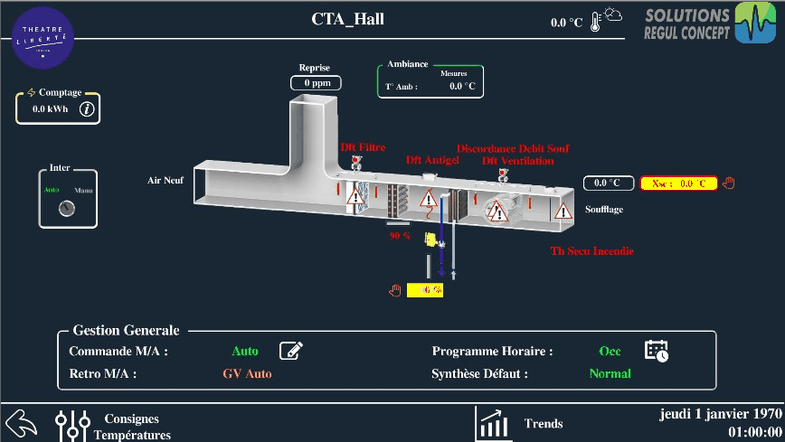
Théâtre Liberté — reprise complète de la régulation
Remplacement d'un parc Sauter obsolète par des automates Loytec, des schémas électriques à la mise en service : 242 points, 34 programmes, 6 centrales de traitement d'air et le groupe froid.
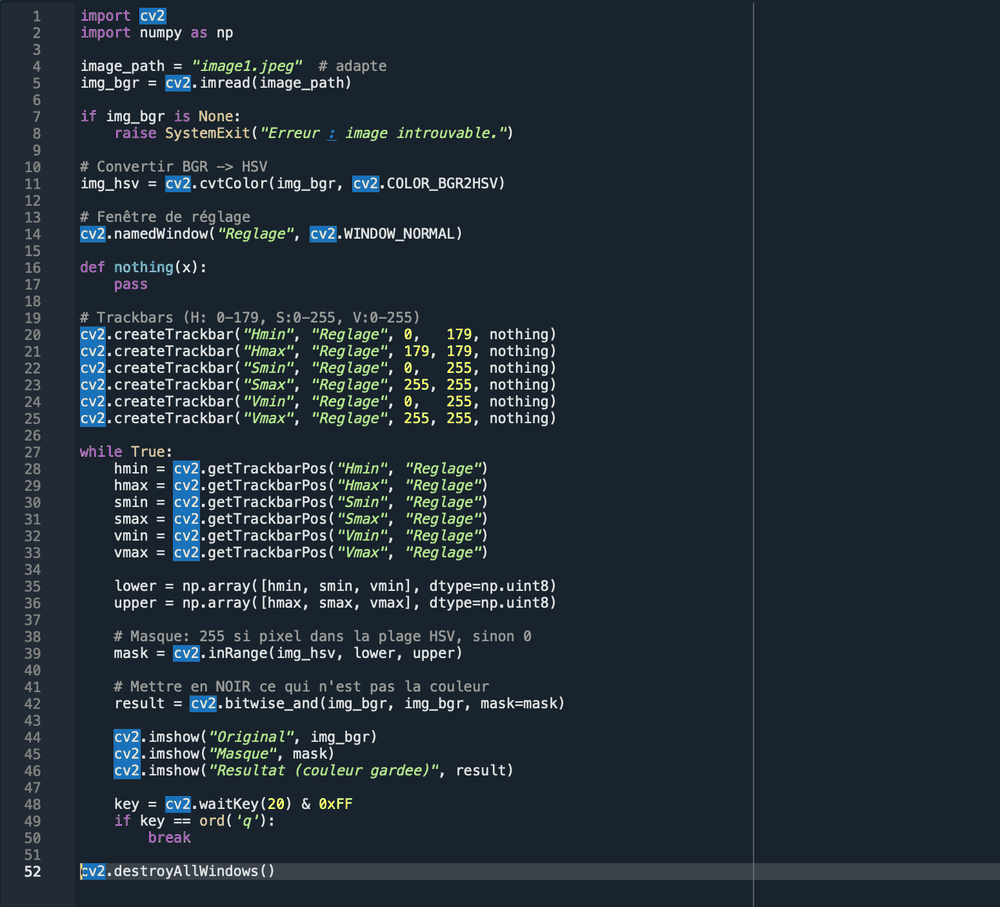
Tableau de Bord IoT
Acquisition et visualisation de données
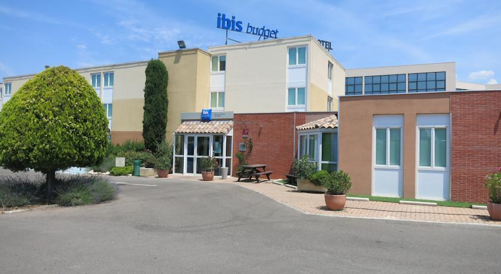
Hôtel Ibis — Supervision
Gestion climatique et thermostats
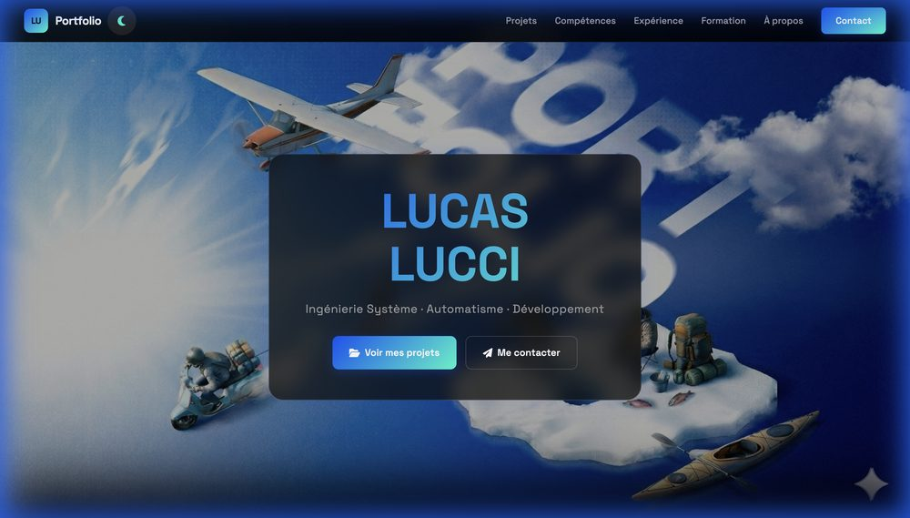
Portfolio Personnel
Site web moderne et interactif
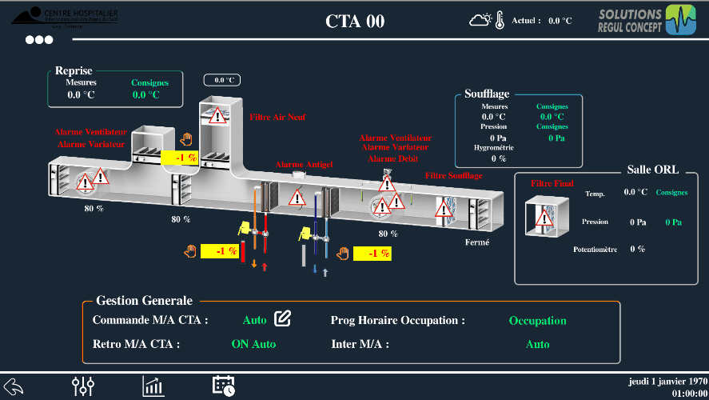
Hôpital de Gap — Blocs Opératoires
Supervision CTA : flux d'air, surpression, alarmes médicales
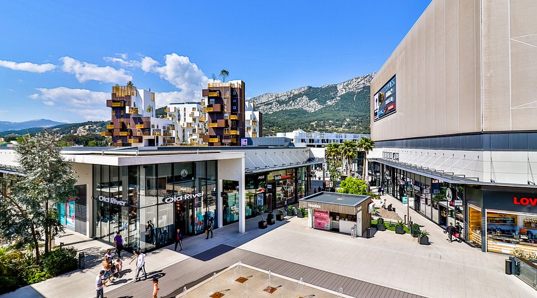
Avenue 83 — Économies d'Énergie
Isolation de zone : vannes 2 voies, séquencement, pompes
Boatie — programmation d'une CTA
Programme complet d'une centrale de traitement d'air sous L-Studio, livré seul : le client réalisait l'installation. Présentation au client et diagnostic à distance.
Bibliothèque de programmes réutilisables
Projet L-Studio dédié, rangé par type de centrale et par particularité. Un nouveau chantier repart de ces programmes au lieu de tout réécrire.
Saint-Cyr-les-Lecques — bâtiment communal
Chantier mené malgré un écran de supervision détruit avant la mise en service, et un nombre de liaisons Modbus supérieur à ce que le dossier annonçait.
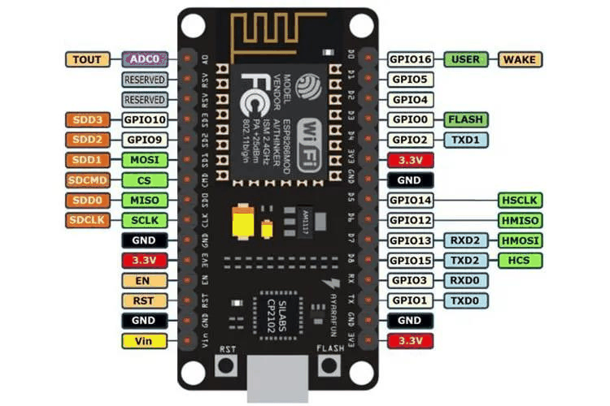
SAÉ 3.01 / 3.02 — Moteur DC piloté par interface web
Variation d'un moteur à courant continu par PWM, commandée depuis une page web embarquée sur ESP8266 et depuis un client LabVIEW sur serveur TCP.
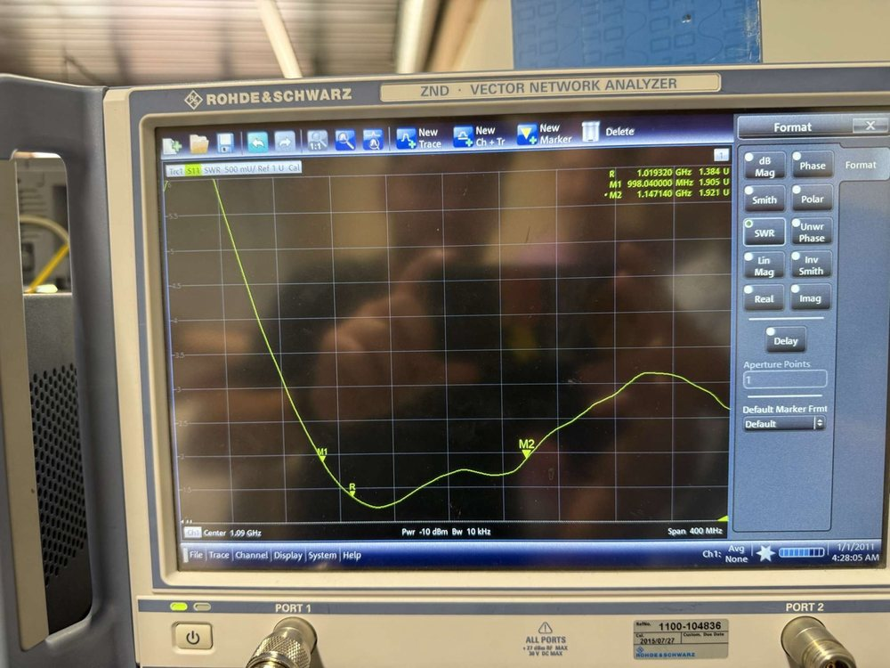
Réception et décodage ADS-B
Capture des trames de position d'aéronefs par radio logicielle, décodage en Python, et vérification de l'adaptation d'antenne au NanoVNA.
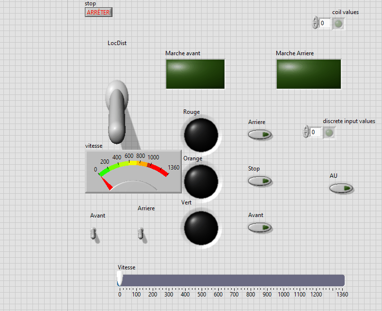
Supervision d'un moteur asynchrone
Interface de conduite en modes local et distant : sens de marche, consigne de vitesse, voyants d'état et pilotage des sorties TOR.
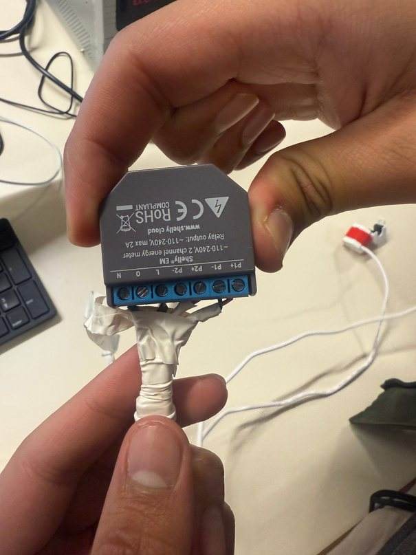
SAÉ 4.01 — Compteur d'énergie connecté Shelly EM
Prise en main d'un module de comptage communicant : raccordement, mise en service et relevé des consommations.
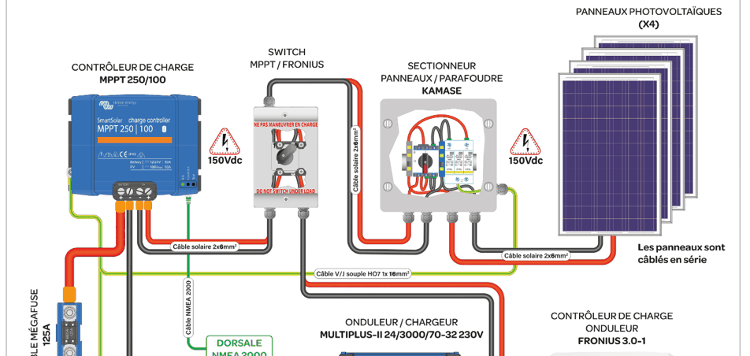
Installation photovoltaïque autonome
Analyse et justification du dimensionnement d'une installation en site isolé : régulateur MPPT, parc de batteries, onduleur-chargeur et protections.
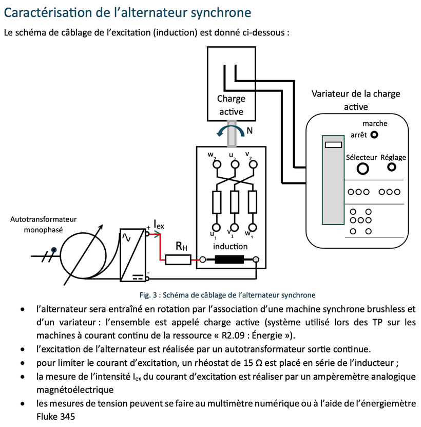
Alternateur synchrone et couplage au réseau
Caractérisation d'un alternateur, détermination du modèle de Behn-Eschenburg, étude en charge puis couplage au réseau.
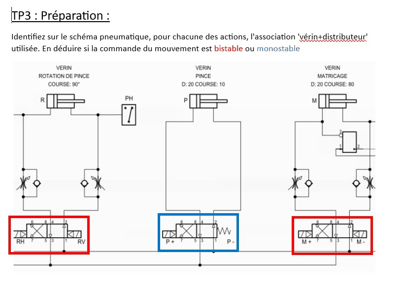
TP d'automatisme — château d'eau et bras manipulateur
Deux systèmes automatisés en première année : la gestion de deux pompes de forage sur niveaux, et le cycle d'un bras pneumatique programmé sous CoDeSys.
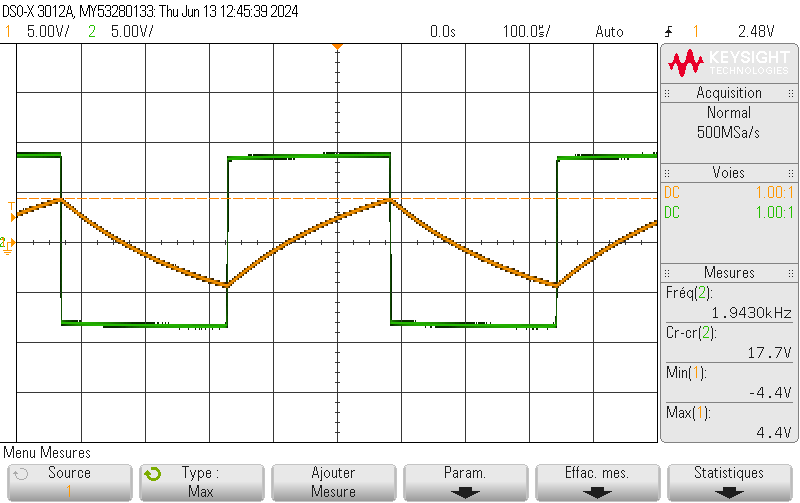
Astable 2 kHz et filtre passe-bas du 2ᵉ ordre
Génération d'un signal carré par astable à amplificateur opérationnel, puis étude du filtrage : spectre, diagramme de Bode, résonance et bande passante.
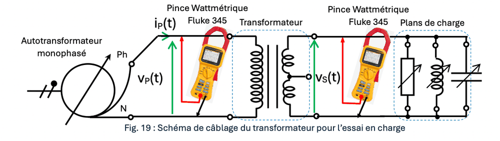
Transformateurs monophasés
Essais à vide, en court-circuit et en charge pour établir le schéma équivalent d'un transformateur et vérifier la validité du modèle théorique.
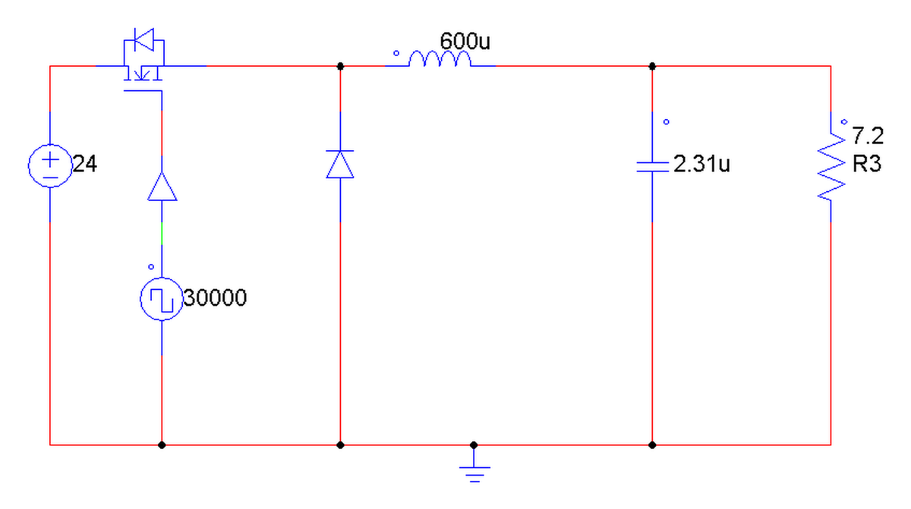
Variateur de Vitesse Connecté
Hacheur Pont en H pour moteur DC : dimensionnement, simulation PSIM, PWM 30kHz
Robot Cartésien 2 Axes
Deux semestres : remise en service complète, puis automatisation (homing, mode automatique, IHM tactile)
Aucun projet ne réunit ces filtres. Retire-en un pour élargir.
Compétences
B.U.T. Génie Électrique et Informatique Industrielle — Parcours Automatisme
Concevoir
Mener une conception partielle intégrant une démarche projet
Ce que ce niveau implique :
- Décomposer un cahier des charges en sous-ensembles fonctionnels
- Justifier les technologies retenues au regard des contraintes physiques
- Reprendre sa conception quand une contrainte nouvelle apparaît
Ce que je maîtrise :
Sur une chaîne de bouchonnage automatisée (TP d'automatisme, BUT 1), j'ai conçu la partie commande : décomposition du cahier des charges en quatre grafcets — mise en route des convoyeurs, tri, assemblage, éjection — puis programmation et mise en service sur un automate WAGO. J'ai justifié les technologies de détection au regard des matériaux en jeu : inductif pour les bouteilles en aluminium, infrarouge pour distinguer les bouchons plastique, capacitif pour contrôler qu'une bouteille est bien bouchée. Quand une contrainte de gestion de stock est arrivée en cours de TP — arrêter les convoyeurs et neutraliser le tri au-delà de cinq bouchons — j'ai repris les grafcets pour l'intégrer. En alternance, je conçois de la même façon les programmes de gestion technique livrés sur site.
À améliorer :
Le banc était déjà équipé : j'ai justifié des technologies, je ne les ai pas sélectionnées face à un catalogue. Et je travaillais sur un cahier des charges fourni — rédiger le mien, et formaliser un dossier de conception avant de programmer, reste à acquérir.
1 preuve
Concevoir un système en fiabilisant les solutions proposées
Ce que ce niveau implique :
- Dimensionner les composants avec marge de sécurité
- Valider par simulation avant réalisation
- Proposer des solutions robustes et fiables
Ce que je maîtrise :
Dimensionnement théorique (calcul inductance, condensateurs), simulation PSIM, choix composants avec marges de sécurité (MOSFET, drivers, diodes protection).
À améliorer :
Réalisation physique de l'inductance de lissage, optimisation du layout PCB pour minimiser les perturbations.
1 preuve
Concevoir un système en adoptant une approche sélective dans ses choix technologiques
Ce que ce niveau implique :
- Choisir les technologies adaptées au contexte industriel
- Configurer et intégrer des équipements multi-constructeurs
- Structurer l'architecture (automate, variateurs, IHM, bus terrain)
Ce que je maîtrise :
Configuration variateurs LXM32 via SoMove (couple, vitesse, identification moteur), intégration bus CANopen (Node ID, Baudrate), programmation Motion Control en LADDER avec DFB (Power, Reset, Jog, Read/Write SDO), conception IHM Vijeo Designer, réalisation schémas électriques (QElectroTech).
À améliorer :
Trajectoires interpolées X/Y (le mode automatique actuel enchaîne des déplacements point à point), profils de mouvement avancés, et interfaçage avec des fichiers de conception DXF — piste identifiée en fin de SAÉ 6.01.
1 preuve
Vérifier
Effectuer les tests et mesures nécessaires à une vérification d'un système
Ce que ce niveau implique :
- Mener une série d'essais pour caractériser un système
- Comparer les valeurs mesurées aux valeurs théoriques attendues
- Conclure sur la validité du modèle, y compris quand il ne tient pas
Ce que je maîtrise :
Sur le transformateur monophasé (TP d'électrotechnique, BUT 1), j'ai mené les trois essais classiques — à vide, en court-circuit, en charge — relevé tensions, courants, puissances active et réactive et facteurs de puissance, et déduit des mesures les éléments du schéma équivalent. J'ai ensuite confronté le modèle de Kapp calculé aux mesures réelles et conclu qu'il ne rendait pas compte de cet essai en charge. En alternance, je fais des relevés et des vérifications à chaque mise en service.
À améliorer :
Remonter à la cause d'un écart entre théorie et mesure : sur ce TP, j'ai constaté que le modèle ne collait pas sans pouvoir l'expliquer précisément. Et consigner mes relevés dans un document exploitable, plutôt que de valider au fil de l'eau.
1 preuve
Mettre en place un protocole de tests pour valider le fonctionnement d'un système
Ce que ce niveau implique :
- Valider une structure en simulation avant de la réaliser
- Confronter les valeurs obtenues aux exigences du cahier des charges
- Découper la vérification en phases plutôt que de tout éprouver à la fin
Ce que je maîtrise :
Sur le variateur de vitesse (SAÉ 3.01) : après avoir dimensionné l'inductance de lissage (600 µH) et le condensateur de filtrage puis validé la structure en simulation PSIM, j'ai construit le prototype et déroulé les phases de vérification des fonctionnalités puis des contraintes, avant ajustement et validation.
À améliorer :
Consigner les résultats : le compte-rendu de cette SAÉ documente le dimensionnement et la simulation, pas les relevés de la phase de vérification. Une fiche de tests écrite avant de commencer, et remplie au fur et à mesure, manque encore à ma pratique.
1 preuve
Élaborer une procédure intégrant une démarche qualité pour valider le fonctionnement
Ce que ce niveau implique :
- Établir un protocole de tests structuré (E/S, communication, sécurité)
- Diagnostiquer les pannes mécaniques et électriques
- Valider la conformité du système avant mise en production
Ce que je maîtrise :
Audit armoire électrique (câblage non conforme → refonte complète), diagnostic pannes mécaniques complexes (poulie désolidarisée axe Y), tests communication CANopen (Heartbeat, Node ID), validation modes manuels (Jog X/Y), sécurisation circuits 24V/230V. En SAÉ 6.01, diagnostic dynamique d'un comportement aléatoire en mode automatique par analyse des variables en ligne (désynchronisation liée au temps de cycle, référentiel non validé), corrigé et validé par des essais répétés jusqu'à 100 % de répétabilité — la démarche de diagnostic dynamique est désormais acquise.
À améliorer :
Formalisation procédures de recette industrielles, documentation tests selon normes (IEC), protocoles de validation automatisés.
1 preuve
Maintenir
Intervenir sur un système pour effectuer une opération de maintenance
Ce que ce niveau implique :
- Remonter d'un symptôme à sa cause par élimination
- Distinguer un défaut de câblage, un défaut de paramétrage et un organe hors service
- Consigner ce qui doit être remplacé pour que le client puisse le planifier
Ce que je maîtrise :
Sur les installations en exploitation, je suis une procédure de diagnostic ordonnée. Un point qui ne remonte pas m'envoie d'abord au câblage — sonde, vanne trois voies. S'il remonte mais que la valeur est incohérente, je cherche une erreur de paramétrage : une sonde déclarée en NTC10K alors qu'il s'agit d'une PT100 affiche une température plausible et pourtant fausse. Si l'anomalie persiste, je tranche par élimination entre un module défectueux et une entrée ou une sortie d'automate endommagée ; dans ce second cas, je recâble sur une voie disponible, je reporte la modification sur le schéma électrique, puis j'adapte le programme. Quand l'automate n'a plus de voie libre, ou qu'un organe est hors service, je le consigne au rapport d'intervention pour que le client planifie son remplacement. En visite préventive, je vérifie que chaque alarme se déclenche dans les bonnes conditions et retombe une fois le défaut levé.
À améliorer :
Suivre un parc dans la durée. Mes rapports décrivent bien une intervention, mais rien ne relie une visite à la suivante : repérer qu'une même sonde est tombée deux fois dans l'année demande une historisation que je n'ai pas encore mise en place.
1 preuve
Mettre en place une stratégie de maintenance pour garantir un fonctionnement optimal
Ce que ce niveau implique :
- Définir une règle d'alternance des organes redondants pour répartir l'usure
- Assurer la continuité de service par bascule automatique sur défaut
- Intégrer les sécurités process et laisser une reprise en main à l'exploitant
Ce que je maîtrise :
Programmation de la permutation des organes redondants — pompes doubles et chaudières,
sur le même principe — en blocs fonctions sous L-Studio (Loytec), sur des installations en
exploitation. Le compte-rendu joint détaille l'implantation sur les pompes. La bascule est
calendaire : l'horloge de l'automate est découpée par SPLIT_DT et le jour du mois
décide quel organe est autorisé, soit une permutation à la quinzaine. L'usure se répartit entre
les deux organes, et aucun ne reste assez longtemps à l'arrêt pour se gripper. Le défaut d'un
organe autorise l'autre hors cycle, dans les deux sens, ce qui maintient le service sans
intervention. S'y ajoutent la sécurité manque d'eau câblée en série sur la commande, un
sélecteur automatique / manuel et un forçage laissé à l'exploitant, placé en parallèle de la
chaîne automatique mais toujours soumis à la sécurité manque d'eau.
À améliorer :
La permutation suit le calendrier, pas les heures réelles, et l'écart joue toujours dans le même sens : sur une année, un organe est autorisé 197 jours contre 168 à l'autre, soit 8 % de déséquilibre. Le compteur d'heures existe en supervision mais ne déclenche rien. Et l'état remonté est la commande calculée, pas un retour de marche : une pompe commandée mais réellement à l'arrêt ne se distingue pas à ce niveau du programme.
1 preuve
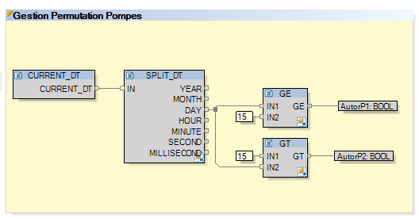
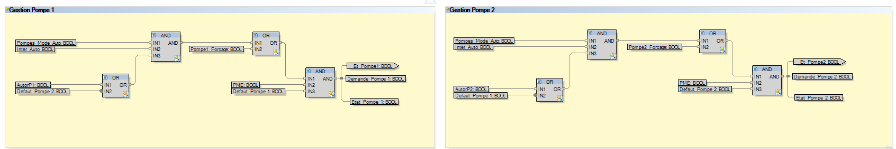
Intégrer
Procéder à une installation ou à une mise en service en suivant un protocole
Ce que ce niveau implique :
- Relever les contraintes physiques du site avant d'agir sur l'installation
- Ordonner les manœuvres pour qu'aucun état transitoire ne soit dangereux
- Programmer sur site et caler le fonctionnement sur l'occupation du bâtiment
Ce que je maîtrise :
Au centre commercial de l'Avenue 83, j'ai programmé sur automate Sauter, directement sur site, deux vannes deux voies isolant la zone nord — les magasins, fermés à 20 h — de la zone sud, où les restaurants restent ouverts jusqu'à 2 h. Le circuit qui renvoie l'eau vers le retour est plus étroit que le réseau principal et les pompes en amont sont puissantes : refermer une vanne sans précaution exposait l'installation à une surpression. J'ai donc séquencé la manœuvre — les deux vannes s'ouvrent d'abord, une temporisation de 120 secondes et un contrôle de discordance confirment qu'elles le sont bien, puis l'une se referme, la vitesse des pompes étant réduite pendant l'opération. Le cycle suit ensuite l'occupation du bâtiment : la liaison s'ouvre à 9 h, la configuration s'inverse à 20 h, l'installation s'éteint à 2 h.
À améliorer :
Mesurer ce que j'annonce. L'installation est créditée d'environ 10 % d'économie, mais avec un mois d'exploitation au moment du bilan. Le relevé sur une saison complète, qui seul confirmerait ce chiffre, reste à mettre en place.
1 preuve
Interagir avec les différents acteurs, depuis l'élaboration du protocole jusqu'à l'installation
Ce que ce niveau implique :
- Coordonner avec les différents acteurs d'un projet, de l'étude à l'installation
- Adapter la solution technique aux contraintes réelles du site
- Livrer une interface qu'un opérateur prend en main sans le concepteur
Ce que je maîtrise :
Étude d'implantation et prise en compte des contraintes dimensionnelles, rationalisation du câblage, choix de l'équipement de façade, conception d'une supervision tactile (partie IV du compte-rendu SAÉ 6.01).
À améliorer :
Formalisation d'un dossier de recette d'installation, retour d'expérience structuré après mise en service.
1 preuve
Expérience
3 ans d'alternance en Gestion Technique du Bâtiment (GTC/GTB).
Technicien GTC/GTB
Solutions Regul Concept — Saint-Laurent-du-Var (06)
Développement, programmation et mise en service de systèmes de Gestion Technique Centralisée pour le pilotage des équipements techniques de bâtiments (CVC, éclairage, sécurité).
Ce poste fait suite à mon alternance chez Eurevia : l'équipe avec laquelle je travaillais a quitté l'entreprise pour fonder Solutions Regul Concept, et m'a proposé de la suivre.
- Création d'imageries (interfaces graphiques de supervision) avec la suite Loytec
- Programmation et configuration de contrôleurs via protocoles BACnet et Modbus
- Mise en service sur site : tests E/S, calibration sondes, vérification alarmes
- Interventions à distance via VPN (OpenVPN, FortiClient) sur projets multi-sites
- Optimisation énergétique et réduction des consommations
Technicien GTC/GTB
Eurevia — La Ciotat (13)
Développement d'imageries et mise en service de systèmes de supervision dans un environnement GTB/GTC.
- Création et mise en forme d'interfaces de supervision sur écosystème Loytec
- Intégration des points (états, commandes, consignes) et structuration des pages
- Mise en service et dépannage : tests pompes, vannes, ventilateurs, CTA
- Vérification cohérence des valeurs, identification erreurs de paramétrage
- Diagnostic terrain et à distance (E/S, capteurs, communication)
Monteur et cadreur
Freelance
Réalisation de vidéos pour Mathew Strazel : prise de vue et montage, en autonomie complète face au client, du brief à la livraison. C'est ce travail en solo qui justifie DaVinci Resolve parmi mes outils.
Travail d'équipe
Ce que je sais faire quand je ne suis pas seul devant la machine.
SAÉ 5.01 et 6.01 — Robot cartésien
Répartition des tâches et suivi d'avancement
Projet mené en binôme sur deux semestres, sur un système hors service : diagnostic mécanique, refonte de l'armoire électrique, programmation et supervision, puis automatisation complète. Nous avons piloté la répartition des tâches en Kanban sous Notion, ce qui a permis de travailler en parallèle sur la partie électrique et la partie logicielle sans se bloquer.
Voir le compte-rendu SAÉ 6.01Interventions sur site en alternance
Coordination avec les corps de métier
Les mises en service en GTB se font au milieu d'autres intervenants : chauffagistes, électriciens, exploitants du bâtiment. Vérifier une sonde ou une vanne suppose de se caler sur leur planning et de leur expliquer ce que je teste et pourquoi.
Handball
10 ans en club — HOSH Hyères
Dix ans de handball en club, en parallèle de l'option Éducation Physique et Sportive au baccalauréat. Ce que ça apprend : tenir sa place dans un collectif sur la durée, et ajuster son rôle selon celui des autres pendant l'action, pas après coup.
Mon Parcours
Mon parcours académique en génie électrique et informatique industrielle.
Baccalauréat Général
Lycée Général Jean Aicard
Spécialités : Mathématiques, Sciences Économiques et Sociales. Option : Éducation Physique et Sportive.
BUT GEII — Année 1
IUT de La Garde
Découverte des fondamentaux : électronique analogique et numérique, programmation C, automatismes de base. Alternance chez Eurevia.
BUT GEII — Année 2 (Parcours AII)
IUT de La Garde
Approfondissement : automates programmables, réseaux industriels, régulation. Alternance chez Solutions Regul Concept.
BUT GEII — Année 3 (Parcours AII)
IUT de La Garde
Spécialisation Automatisme et Informatique Industrielle. Projets avancés GTC/GTB. Alternance chez Solutions Regul Concept.
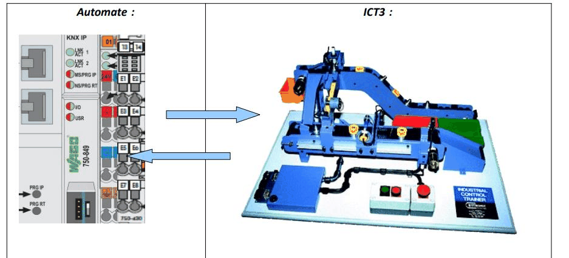
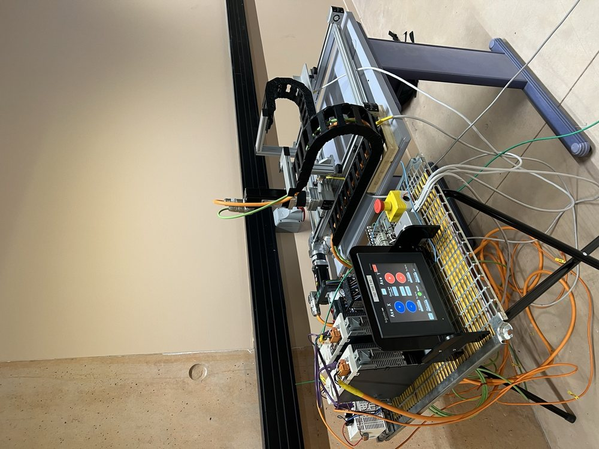
Se projeter
Ce que je compte faire des compétences acquises.
Mon objectif
Cycle ingénieur en apprentissage à l'ISEN Toulon, de 2026 à 2029, en alternance chez Naval Group comme Responsable de Lot de Travaux Système de Combat (SYSCO).
Ce que j'y apporte
Trois ans de terrain en automatisme et gestion technique du bâtiment : mise en service, diagnostic de panne, intégration sur des protocoles BACnet et Modbus, interfaces de supervision. J'arrive en sachant ce que devient un système une fois sorti du plan.
Ce que je veux continuer d'apprendre
Trois ans sur le terrain m'ont donné envie de voir plus large : acquérir une vision d'équipe, apprendre à encadrer et gérer des équipes, et toute la partie gestion de projet. C'est la raison de ce passage en cycle ingénieur.
Langages & Logiciels
Les outils et technologies que je maîtrise pour mes projets.
Me Contacter
N'hésitez pas à me contacter pour discuter d'opportunités ou de collaborations.